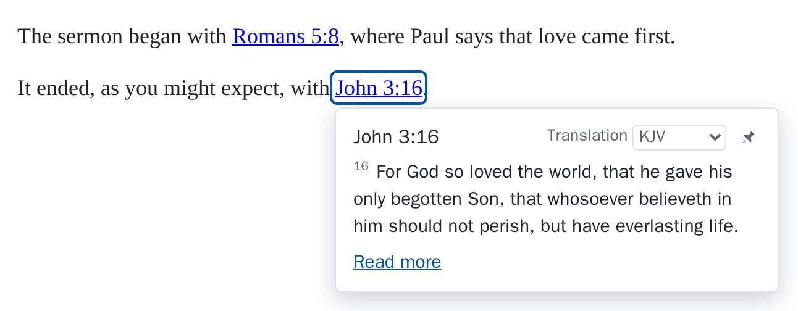

This is what your visitors get. It works with a mouse, a touch screen and a keyboard.

The tooltip opens under its link, or above it where there is more room.
Opening and closing
Mouse: it opens when the pointer rests on a link (after 300 ms, which you can change) and closes when the pointer leaves.
Touch: the first tap opens the tooltip instead of following the link. Read more is the way on.
Keyboard: it opens when the link takes the focus, and Esc closes it.
The link being looked at is outlined. To restyle the outline, style a.st-ref[aria-expanded="true"] in your own CSS.
What it shows
A translation menu. A visitor's choice is kept for that link in their own browser, so it is the same on their next visit. See the translation passages open in.
A pin (“Keep open”), which keeps the tooltip open while the visitor writes a comment or reads on. Any number can be pinned: other passages open their own tooltips beside them. Clicking it again, or Esc, lets that one go.
The passage, up to 12 verses. A longer one ends with “…”.
The credit the translation's publisher asks for, with its links.